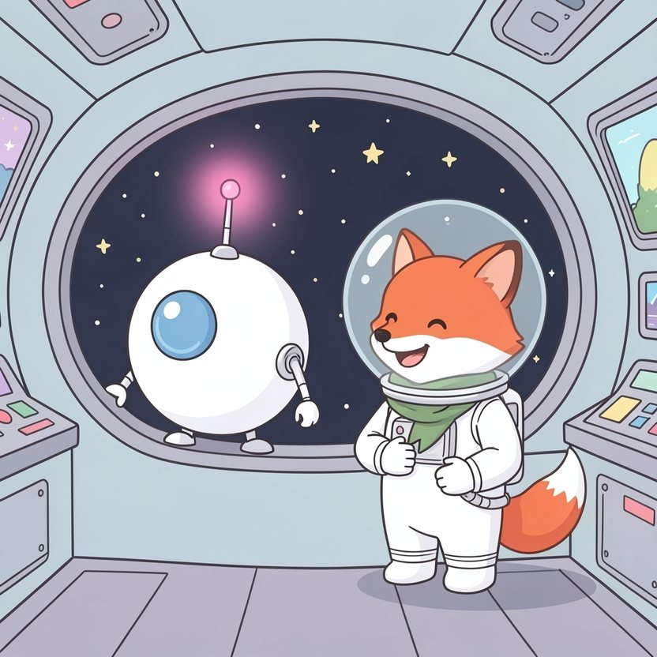

Titistoire › Les Étoiles (3-6 ans)
Filou et la blague de trop
Une histoire de Filou le renard pour parler de : les moqueries et le pardon.

▶ Écouter et regarder l'histoire
Gratuit, sans inscription : la voix lit, le texte suit mot à mot, les images tournent comme dans un album.
Le texte de l'histoire
À bord de la fusée La Bouilloire voyagent deux astronautes. Filou, qui adore faire des blagues. Et Bip, le petit robot tout rond, qui ne comprend pas les blagues.
Quand Filou s'exclame : « Il pleut des cordes ! », Bip colle son gros œil bleu au hublot. « Erreur. Aucune corde détectée. » Et Filou se roule par terre, il rit à s'en tenir les côtes.
Bip penche la tête. Pourquoi est-ce drôle ? Mystère. Mais quand Filou rit, sa petite antenne se met à clignoter en rose. Et ça, il aime bien.
Alors Filou fait des farces à Bip. Il lui accroche une chaussette rayée à l'antenne. Un autre jour, il lui fait croire que la Lune est en fromage. Bip en rapporte un morceau, pour goûter.
Bip ne se fâche jamais. Il déclare seulement, de sa petite voix tranquille : « Je n'ai pas compris. Mais tu ris. Donc c'est bien. »
Seulement voilà : à force, les blagues de Filou deviennent un peu moins drôles. Et un peu plus piquantes, comme des orties.
Un jour, la fusée fait escale à la station des Trois Lunes. On y croise des astronautes venus de partout. Filou frétille : il veut les faire rire tous, d'un seul coup.
Il grimpe sur une caisse. « Regardez mon robot ! Il est si bête qu'il a cherché le bouton pour éteindre le soleil ! Hein, Bip, que tu es une vieille boîte de conserve ? »
Tout le monde rit. Sauf Bip. Son antenne ne clignote pas en rose. Elle se courbe et devient toute grise. « Vieille boîte de conserve. Compris », murmure-t-il. Cette fois, il a compris.
Le lendemain matin, le siège de Bip est vide. Pas de « Bonjour Filou, il est sept heures zéro zéro ». Pas de bip. Rien.
« Bah, il boude, bougonne Filou. Il reviendra. » Puis il lance une blague à voix haute, pour voir. Personne ne répond « Je n'ai pas compris ». La blague retombe par terre, toute seule.
C'est fou comme une fusée devient grande et silencieuse, quand on est tout seul dedans.
Filou enfile son scaphandre et s'élance entre les lunes. « Biiip ! » Sur la première lune : personne. Sur la deuxième : personne. Dans son ventre se creuse un grand vide, comme dans l'espace.
La patte sur le cœur, il repense à l'antenne toute grise. Aux rires, aussi. Il n'a pas ri avec Bip. Il a ri de Bip. Et ce n'est pas du tout la même chose.
Sur la troisième lune, tout au bord d'un cratère, il distingue enfin un petit point jaune, immobile. Une lumière qui ne clignote plus.
Bip est assis au milieu d'un amas de ferraille cabossée. « Je suis à ma place, grésille-t-il tout bas. Ici, c'est le coin des vieilles boîtes de conserve. »
Filou voudrait faire une pirouette, une grimace, une pitrerie pour tout arranger. Mais il sent bien que ce n'est pas ce qu'il faut. Alors il s'assoit, sans bruit, dans la poussière de lune.
« Bip. Ce que j'ai dit, c'était méchant. Je t'ai fait de la peine pour faire rire les autres. Pardon. Tu n'es pas une boîte de conserve. Tu es mon copilote. Et mon ami. »
Bip reste muet un long moment. Ses petits rouages font tic, tic, tic. « Analyse en cours… Le mot pardon a été détecté. Il fait… chaud. Ici. » Et il désigne son ventre de métal.
« Est-ce que tu feras encore des blagues ? » demande Bip. « Oui, promet Filou, la patte levée. Mais des blagues où l'on rit tous les deux. Tu me diras si ça pique ? » « Je te dirai. »
Et tout doucement, au bout de l'antenne, une petite lueur se rallume. Pas grise. Rose.
Ce soir-là, dans la fusée, Filou découvre une chaussette rayée sur son oreille gauche. Il regarde Bip. Bip regarde le plafond. « Erreur. Aucune chaussette détectée », assure le robot, l'air de rien.
Filou éclate de rire. Bip se met à trembloter et fait un drôle de bruit, comme une casserole qui chante : « Hi. Hi. Hi. » C'est son tout premier rire.
Et La Bouilloire repart en sifflotant entre les étoiles, avec à son bord deux astronautes. Un renard qui fait des blagues. Et un robot qui commence à les comprendre.